Goldenleaf Gym
Goldenleaf Gym Puzzle

As you enter Goldenleaf Gym, Narcissa will greet you. Not too long after, you'll find that Ren has caught up with you and also wants to battle Narcissa. Narcissa agrees to battle whoever gets to her first after going through the gym puzzle, and Ren will rush off to the right side. Go ahead and enter the left side of the auditorium. Battles from here on will be fought in the Haunted Field, so be prepared for it.
This gym puzzle can be confusing at first, but there is a pattern to it. Go a ahead and enter the ground floor's left room and talk to the Mimikyu and notice the lamps lighting up. Here, you must follow where the light is lit. In the room on the right on the first floor, there's Old Lady Margaret,
 and after you can go behind the painting you'll find Ghost Girl Marissa.
and after you can go behind the painting you'll find Ghost Girl Marissa. Keep going until you reach the PC Star and the Healing Star. Note that the Healing Star is red, so you'll only be able to heal using it once. You can use the PC Star to heal by depositing and withdrawing your Pokemon. Once your ready, step through the doors next to it and battle Ren.
Keep going until you reach the PC Star and the Healing Star. Note that the Healing Star is red, so you'll only be able to heal using it once. You can use the PC Star to heal by depositing and withdrawing your Pokemon. Once your ready, step through the doors next to it and battle Ren.

Pokemon Trainer Ren
|
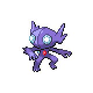
Sableye, Level 32 - Sitrus Berry |
Ghost | Secret Power |
|---|---|---|
| Night Shade | ||
| Dark | Confuse Ray | |
| Recover | ||
|
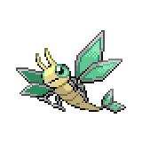
Vibrava, Level 33 - Earth Plate |
Ground | Dragon Pulse |
| Earthquake | ||
| Dragon | Rock Slide | |
| Ominous Wind | ||
|
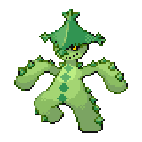
Cacturne, Level 34 - Occa Berry |
Grass | Needle Arm |
| Secret Power | ||
| Dark | Leech Seed | |
| Spiky Shield | ||
|
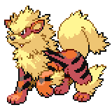
Arcanine, Level 35 - Sitrus Berry |
Fire | Flame Burst |
| Thunder Fang | ||
| Double Kick | ||
| Howl | ||
|
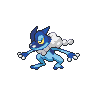
Frogadier, Level 35 - Mystic Water |
Water | Water Pledge |
| Icy Wind | ||
| Lick | ||
| Hidden Power (Electric) | ||
Reward:  735 735
|
||
Ren's team has gotten much stronger in terms of stats, but his movepool can still be taken advantage of. Sableye is not much of a threat, though do note that Night Shade does 1.5x the user's level rather than just the user's level. Vibrava has strong moves, but its stats aren't too high at the moment. Arcanine, Cacturne, and Frogadier all have mediocre moves, so you shouldn't be taking too many strong hits from them. As long as you have a well crafted team that's at the level limit, this battle shouldn't be too difficult.
Once you beat him, answer "No" to his question to gain a relationship point with him. He'll offer you some advice, and then leave. Go back and heal up, then step through the mirror. DO NOT step onto the battlefield yet. You can actually sneak around the battlefield and head down to the audience to get some useful items: a Hyper Potion, a Max Potion, and a Max Revive. once you're ready, step onto the battlefield to battle Narcissa.

Actress Narcissa
|
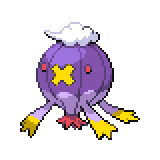
Drifblim, Level 32 - Magical Seed |
Ghost | Spectral Scream |
|---|---|---|
| Icy Wind | ||
| Flying | Hidden Power (Fighting) | |
| Hypnosis | ||
|
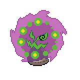
Spiritomb, Level 33 - Leftovers |
Ghost | Spectral Scream |
| Dream Eater | ||
| Dark | Nightmare | |
| Hypnosis | ||
|
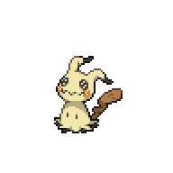
Mimikyu, Level 33 - Pixie Plate |
Ghost | Play Rough |
| Shadow Claw | ||
| Fairy | Shadow Sneak | |
| Hone Claws | ||
|
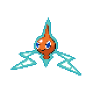
Rotom, Level 34 - Leftovers |
Ghost | Spectral Scream |
| Hex | ||
| Electric | Discharge | |
| Will-O-Wisp | ||
|
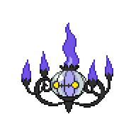
Chandelure, Level 34 - Passho Berry |
Ghost | Spectral Scream |
| Flame Burst | ||
| Fire | Night Shade | |
| Will-O-Wisp | ||
|
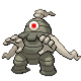
Dusclops, Level 35 - Eviolite |
Ghost | Spectral Scream |
| Pain Split | ||
| Night Shade | ||
| Will-O-Wisp | ||
|
Reward: 2415
|
||
It's difficult to see a world where Ren would win this battle with his current team. On this field, Ghost-type moves have their bast power boosted by 1.3x, and also hit Normal-type Pokemon supereffectively. Dark-type moves and special Fairy-type moves are slightly weakened, and Psychic-type moves have their power cut in half. Her signature move, Spectral Scream, is a special attack that has a chance of boosting her Pokemon's defense by one stage. Narcissa's team itself is a solid mixture of bulky tanks and fast sweepers, and every single one of her Pokemon is a threat on this field.
Her overall general strategy is to Burn and Sleep you to death. Here, Will-O-Wisp and Hypnosis have their accuracy increased to 90, meaning that it will most likely hit. If your Pokemon are inflicted by Sleep, it will also take 1/16 Max HP damage each turn, meanwhile Narcissa will continue to bulk up her Pokemon via Spectral Scream. If you don't have a way to deal with status effects, her Pokemon will wear you down very quickly while being virtually unstoppable themselves.
For her stall Pokemon, she starts of with her Drifblim with a Magical Seed equipped, meaning it will get a Defense and Special Defense boost in return for being Burned. Normally this would be a tradeoff but her Drifblim also has Flare Boost, which doubles its Special Attack while being burned. It'll always try to put you to sleep, so knock it out before it does too much damage to your team. Spiritomb is her staller. It will put you to sleep, inflict you with Nightmare, then also use Dream Eater to heal itself back up or boost its Defense with Spectral Scream. Her final stall Pokemon is her ace, Dusclops. This thing holds an Eviolite, and with Pain Split it can live for much longer than you would expect.
For her more offensive Pokemon, her Mimikyu is the only Pokemon that doesn't have Spectral Scream. It does, however, have Hone Claws and if it gets a stat boost it can quickly rip through teams with a combination of Play Rough and Shadow Claw. Since Play Rough is a physical move, it doesn't get weakened by the field either. Her Rotom and her Chandelure function effectively the same as each other, being very fast and hitting very hard with Spectral Scream or Discharge/Flame Burst respectively. Both of them can also Burn you, and Rotom has Hex to take advantage of that.
With all that said, not all hope is lost. A Pokemon that is immune to sleep, for example having Insomnia, Vital Spirit, or Sweet Viel, can effectively shut down Spiritomb while not letting Drifblim set up freely. Rotom's and Chandelure's defenses are pretty low, so if you manage to avoid being burned your physical attackers can actually take them down quickly. Mimikyu can pose an issue due to its ability letting it take a free hit, but after that it can also be taken down by a strong move or two. Finally her Dusclops relies on its Eviolite to be tanky, so a Knock Off will actually help a lot with it.
There are also ways to change the field to somewhere more advantageous. With Flash or Dazzling Gleam, you can turn the field into a Blessed Field, allowing your Normal-type Pokemon to hit her Ghost-type Pokemon supereffectively. Do note though, that she can turn the field back into a Haunted Field at any time even if your Pokemon is immune to the move. Another strategy is removing the field entirely using Mist, which turns the field into a Misty Terrain. Ghost-type moves aren't weakened on this field, but at least it won't be boosted. It will only last 3 turns, so you will need to keep reapplying the move, but this will allow you to be immune to whatever status Narcissa wants put on you as well as powering up your Fairy-type Pokemon. You can also survive until Mimikyu comes out, Charm or Burn it, then use the fact that it can't do much damage to set up your Pokemon.
Other options include Fire-type Pokemon. Moves such as Flame Burst, Flame Charge, and Fire Spin gains additional Ghost-typing, meaning it will hit her whole team except for Chandelure and Spiritomb supereffectively. You have the TM for Flame Charge at this point, so you can check to see who can learn the move. Other options include Nuzleaf, which you can evolve into Shiftry. Nuzleaf learns Nature Power naturally at level 16, and on this field Nature Power turns into the very powerful Phantom Force, meaning Shiftry can deal super effective damage to everything but Spiritomb. A Loudred with Soundproof is immune to Spectral Scream and can use Roar to rack up entry hazard damage if you have them set up, although its defenses are pretty low so you need to be careful of other moves such as Flame Burst, Discharge, and Play Rough/Shadow Claw. Finally, if you have any Pokemon that evolve at level 36 or 37, you can use Rare Candies to get that evolution before using a Reverse Candy to not exceed the level limit. The stat boost can mean a lot in a battle like this.
Regardless, when you beat her, she'll give you the Phantasm Badge, raising your level limit to level 40. She'll also give us our first powerful TM, TM30 Shadow Ball. With that done, exit the theatre and watch a scene from the Shadow Realm. Although the title screen hasn't shown up yet, we will continue next with Chapter 5.
<< Side Activities - Goldenwood Forest Revisit Wispy Ruins >>